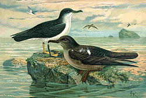
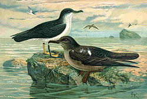

| Manx Shearwater | |
|---|---|
|  | |
| Puffinus puffinus (left) | |
| Conservation status | |
| Binomial name | |
| Puffinus puffinus (Brünnich, 1764) |
|
| Synonyms | |
|
Procellaria puffinus Brünnich, 1764 |
| Manx Shearwater | |
|---|---|
|  | |
| Puffinus puffinus (left) | |
| Conservation status | |
| Binomial name | |
| Puffinus puffinus (Brünnich, 1764) |
|
| Synonyms | |
|
Procellaria puffinus Brünnich, 1764 |
The Manx Shearwater (Puffinus puffinus) is a medium-sized shearwater in the seabird family Procellariidae. The scientific name of this species records a name shift: Manx Shearwaters were called Manks Puffins in the 17th century. Puffin is an Anglo-Norman word (Middle English pophyn) for the cured carcasses of nestling shearwaters. The Atlantic Puffin acquired the name much later, possibly because of its similar nesting habits. [1]
The prefix Manx, meaning from the Isle of Man, originated owing to the once large colony of Manx Shearwaters found on the Calf of Man (a small island just south of the Isle of Man). The species had declined there owing to the accidental introduction of rats from a shipwreck in the late 18th century; the rats have, however, recently been removed from the Calf of Man allowing Shearwater numbers to increase.
This species breeds in the North Atlantic, with major colonies on islands and coastal cliffs around Great Britain and Ireland. These birds have been nesting along the Atlantic coast of northeastern North America since about 1970[citation needed]. They nest in burrows, laying one white egg which is only visited at night to avoid predation by large gulls. The islands are usually free of mammalian predators (but on the island of Rùm, about 4 percent of the chicks are preyed on by Red Deer and sheep that need extra calcium.)[2] They form life-long monogamous pair-bonds.
This bird is 30–38 cm long, with a 76–89 cm wingspan. It has the typically "shearing" flight of the genus, dipping from side to side on stiff wings with few wingbeats, the wingtips almost touching the water. This bird looks like a flying cross, with its wing held at right angles to the body, and it changes from black to white as the black upperparts and white undersides are alternately exposed as it travels low over the sea.
This is a gregarious species, which can been seen in large numbers from boats or headlands, especially on passage in autumn. It is silent at sea, but at night the breeding colonies are alive with raucous cackling calls. The Manx Shearwater feeds on small fish (particularly herring, sprat and sardines), crustaceans, cephalopods and surface offal. The bird forages individually or in small flocks, and it makes use of feeding marine mammals and schools of predatory fish, which push prey species up to the surface. It does not follow boats.
They are extraordinarily long-lived. A Manx Shearwater breeding on Copeland Island, Northern Ireland, was as of 2003/2004 the oldest known living wild bird in the world: ringed as an adult (at least 5 years old) in July 1953, it was retrapped in July 2003, at least 55 years old[citation needed].
Manx Shearwaters migrate over 10,000 km to South America in winter, using waters off southern Brazil and Argentina[3], so this bird has covered a minimum of 1,000,000 km on migration alone (not counting day-to-day fishing trips). Another bird ringed in 1957 and still breeding on Bardsey Island off Wales in April 2002, was calculated by ornithologist Chris Mead to have flown over 8 million km (5 million miles) during its life.

{kind=link}